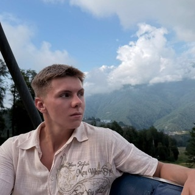
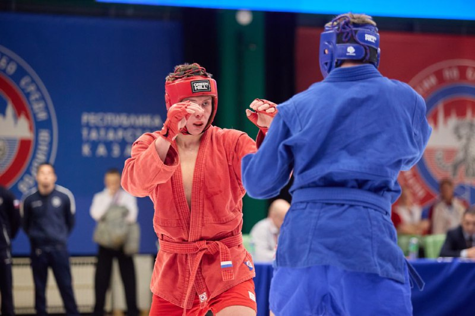

Димитрий
Кищенко.
Учусь на статистике в Политехе. Сопровождаю участников «Студенческого стартапа» и работаю над своим проектом преТендер.
Гранты
и свой проект
Сопровождаю участников конкурса «Студенческий стартап» Фонда содействия инновациям: помогаю с идеей, заявкой и защитой, а после победы — с исполнением договора и отчётностью.
В 2026 году выиграл грант ФСИ на 1 млн ₽ для своего проекта преТендер. Это будущий сервис ИИ-разбора тендерной документации для небольших строительных компаний. Сейчас проект на стадии разработки.
Учёба
и первые проекты
Учусь в Санкт-Петербургском политехническом университете Петра Великого, ИПМЭиТ, на направлении «Статистика».
Ещё в школе стал победителем «Большой перемены» в вызове «Предпринимай!». Прошёл акселератор Сбера.
Собрал команду примерно из 12 человек для первого проекта — сервиса анонимной обратной связи AnonFeed. Почти год руководил работой над проектом, затем закрыл его.
Спорт
и соревнования
13+ лет занимаюсь единоборствами. КМС по самбо. Победитель всероссийских и международных турниров по боевому самбо.
